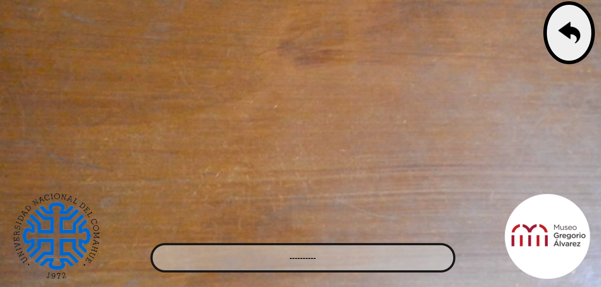

INSTRUCCIONES DE USO
MuseoRA es una aplicación de realidad aumentada la cual muestra al usuario una serie de objetos virtuales tridimensionales al enfocar marcadores específicos. Para ello, la aplicación debe ejecutarse en un dispositivo que cuente con una cámara como un celular, una tablet o una computadora (en el caso de una computadora, puede usarse una cámara web o una cámara integrada).
La primera pantalla que usted visualizará al abrir la aplicación será el menú principal:
Allí podrá elegir entre las opciones:
Es la opción que ejecuta el programa. Tras pulsar en esta opción, se cargarán todos los elementos necesarios (marcadores, objetos e información de dichos objetos) y mostrará una nueva ventana en la cual se verá lo que la cámara del dispositivo esté enfocando en ese momento.
La segunda opción de este menú. Le mostrará la ventana que usted está visualizando en este momento.
Apartado donde se habla del proyecto para la realización de MuseoRA y los participantes del mismo.
Al pulsar en el botón INICIAR, se visualizará una pantalla de carga en donde los marcadores y objetos 3D se preparan para ser utilizados. Luego de unos instantes, se pedirá, al usuario, permiso para poder hacer uso de la cámara del dispositivo (debe aceptarse esta opción).
Una vez se permita el uso de la cámara, la aplicación comenzará a funcionar mostrando aquello que capture la cámara. Por encima de dicha captura, se pueden visualizar distintos elementos relevantes:
----------
Como se mencionó al inicio de este instructivo, esta aplicación muestra un objeto cuando la cámara enfoca a un marcador. A continuación se mostrarán los marcadores que la aplicación reconoce:


Y en los enlaces siguientes encontrará archivos PDF donde descargar dichos marcadores e imprimirlos para que pueda utilizarlos:
APLICACIÓN EN FUNCIONAMIENTO
Para empezar a usar la aplicación se debe ingresar al menú principal, pulsar en el botón iniciar y dar permiso de usar la cámara del dispositivo (como se explicó anteriormente). Una vez allí, solo es necesario enfocar alguno de los marcadores presentados anteriormente para visualizar los diversos objetos.
A continuación se muestra un video ilustrativo sobre la cámara del dispositivo (en este caso una cámara web) enfocando un marcador en tercera persona (vista de fuera de la aplicación) y en primera persona (vista desde la aplicación).
Sin dejar de enfocar el marcador, es posible observar, desde distintos ángulos, el objeto mostrado ya sea que se manipule el marcador o se manipule la cámara. Además, es posible ver más información del objeto visualizado pulsando en el botón de información en la esquina inferior derecha en la aplicación.